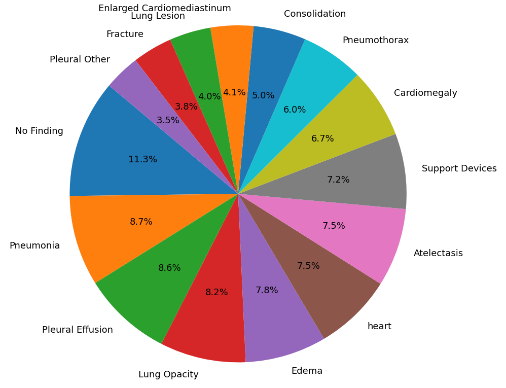
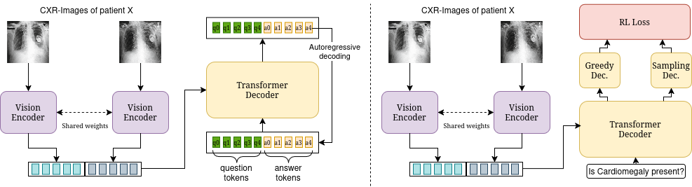
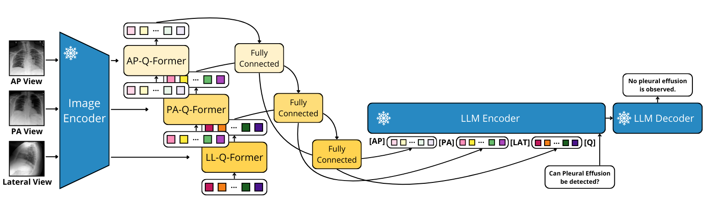
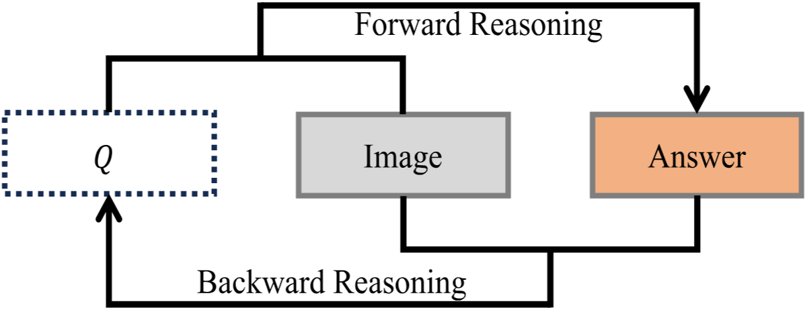

🚧 Some links will become available soon
The interpretation of chest X-rays (CXRs) is a critical yet time-consuming task in clinical radiology, often limited by the availability of expert radiologists. To address this challenge, we introduce a new large-scale medical Visual Question Answering (VQA) dataset derived from the MIMIC-CXR database, containing over 3.2 million question-answer (QA) pairs across 15 clinically relevant categories, enabling the training of multimodal models capable of answering a broad range of diagnostic questions directly from chest X-ray images. Unlike prior datasets, our QA pairs are generated using a large language model, LLaMA 3.1, guided by a carefully crafted prompt structure to produce rich, nuanced, and evidence-based textual answers grounded in radiology reports. We address limitations of existing datasets such as templated responses and linguistic monotony by ensuring diversity, completeness, and clinical fidelity in our QA pairs. To support benchmarking on this new dataset, we provide initial baseline models and training strategies designed to evaluate visual and textual reasoning performance in the medical VQA setting. Extensive experiments demonstrate the effectiveness of our approach across multiple evaluation metrics, establishing a strong benchmark for future research in medical VQA. Our dataset and baseline models pave the way for building clinically meaningful AI tools that can assist radiologists by answering complex diagnostic questions with accuracy and interpretability.

The proposed dataset is a large-scale medical Visual Question Answering resource constructed from the MIMIC-CXR database, comprising 3,247,512 question–answer pairs derived from over 227,000 chest X-ray studies. The questions cover 15 clinically relevant categories, including major thoracic findings such as cardiomegaly, pneumonia, pneumothorax, pleural effusion, and support devices, enabling broad diagnostic coverage. This scale makes the dataset suitable for training modern multimodal models while remaining grounded in real-world radiological practice.
A defining characteristic of the dataset is the nature of its answers. Instead of short, templated, or label-like responses, all answers are open-ended, descriptive, and linguistically rich, generated using a controlled LLM-based pipeline built on LLaMA 3.1. The generation process enforces a strict evidence-based constraint, ensuring that every answer is fully grounded in the radiographic findings and expressed using radiology-consistent language. This design transforms medical VQA from a classification-style task into a genuine generative reasoning problem, better aligned with how radiologists interpret and describe images.
Importantly, the dataset is doubly balanced. First, it is balanced across pathology categories, preventing any single finding from dominating the question distribution. Second, it is balanced between positive and negative findings. Because clinical datasets naturally contain more positive labels, additional questions are generated from not-mentioned conditions and treated as negative evidence. This dual balancing strategy mitigates dataset bias, discourages shortcut learning, and encourages models to reason explicitly about both the presence and absence of radiological findings.

SwinVED-SCST is a vision encoder–decoder baseline specifically adapted to the medical VQA setting. It combines a Swin Transformer encoder, pre-trained and fine-tuned on chest radiographs, with a lightweight Transformer decoder for answer generation. The model is trained in multiple stages, culminating in reinforcement learning with Self-Critical Sequence Training (SCST), where BERTScore is used as a reward to directly optimize semantic alignment and clinical coherence. This baseline demonstrates how task-specific visual encoders and sequence-level optimization significantly improve the quality and fidelity of generated medical answers.

BLIP-2 MultiView adapts the general-purpose BLIP-2 framework to the multi-view nature of chest radiography. It employs a frozen EVA-CLIP vision encoder and a frozen FLAN-T5 language model, while training only the Q-Formers and projection layers. Separate visual embeddings are extracted for each available radiographic view and concatenated into a structured visual prefix. This baseline serves as a strong pretrained multimodal reference, illustrating the limitations of generic vision–language models when applied directly to domain-specific medical reasoning tasks.

In addition to our own baselines, we include Cycle-VQA as a recent Medical VQA method for comparison. Cycle-VQA introduces a cycle-consistent reasoning framework that enforces bidirectional consistency between questions, answers, and visual features during training. By jointly optimizing forward reasoning (question–image to answer) and backward reasoning (answer–image to question), Cycle-VQA aims to improve robustness and reduce language bias, providing a strong reference point for evaluating reasoning-focused approaches in medical visual question answering.
The proposed dataset is a large-scale medical Visual Question Answering resource constructed from the MIMIC-CXR database, comprising 3,247,512 question–answer pairs derived from over 227,000 chest X-ray studies. The questions cover 15 clinically relevant categories, including major thoracic findings such as cardiomegaly, pneumonia, pneumothorax, pleural effusion, and support devices, enabling broad diagnostic coverage. This scale makes the dataset suitable for training modern multimodal models while remaining grounded in real-world radiological practice.
A defining characteristic of the dataset is the nature of its answers. Instead of short, templated, or label-like responses, all answers are open-ended, descriptive, and linguistically rich, generated using a controlled LLM-based pipeline built on LLaMA 3.1. The generation process enforces a strict evidence-based constraint, ensuring that every answer is fully grounded in the radiographic findings and expressed using radiology-consistent language. This design transforms medical VQA from a classification-style task into a genuine generative reasoning problem, better aligned with how radiologists interpret and describe images.
Importantly, the dataset is doubly balanced. First, it is balanced across pathology categories, preventing any single finding from dominating the question distribution. Second, it is balanced between positive and negative findings. Because clinical datasets naturally contain more positive labels, additional questions are generated from not-mentioned conditions and treated as negative evidence. This dual balancing strategy mitigates dataset bias, discourages shortcut learning, and encourages models to reason explicitly about both the presence and absence of radiological findings.
@inproceedings{aas-alas2025mimiccxrvqa,
title = {{MIMIC}-{CXR}-{VQA}: A Medical Visual Question Answering Dataset Constructed with {LL}a{MA}-based Annotations},
author = {Mohamed Aas-Alas and Miquel Obrador-Reina and Luis-Jesus Marhuenda and Alberto Albiol and Roberto Paredes},
booktitle = {Submitted to Medical Imaging with Deep Learning},
year = {2025},
url = {https://openreview.net/forum?id=SOSjcyYEKO},
note = {under review}
}